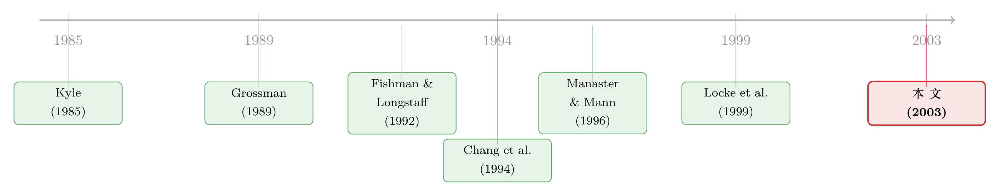

「老经纪人」到底偷没偷你的单？——一场对期货池里 101 个人的逐一审讯
本文读的是 Chakravarty & Li (2003, JFE)：他们用 CFTC 的逐笔审计数据，对芝加哥商品交易所（CME）1992 年上半年的 101 位「双重交易者」一个一个地做格兰杰因果检验，结果发现——这些被国会和 FBI 盯上、被怀疑「抢跑客户单」的老经纪人，其自营交易既不领先、也不跟随客户的订单流；真正驱动他们下单的，是供给流动性和管理库存。一句话，双重交易者的画像不是「内幕」，而是「一个干着辅助活儿的、不知情的做市人」。
1 一桩悬案：站在你和市场之间的那个人
先讲个场景。你是 1980 年代芝加哥某个期货交易池（pit）里的散户客户，你把一张买单交给场内的经纪人（floor broker），让他替你成交。问题来了：这个经纪人，同时也在替自己的账户做交易。
这种「一手替客户下单、一手替自己下注」的安排，有个专门的名字，叫 双重交易 (dual trading)。CME 的规则手册把它定义得很清楚：在你已经替某个客户执行、接收或处理过订单的同一个合约月份里，你又为自己（或自己有利益、能控制的账户）下单——这就是双重交易。
听上去人畜无害，对吧？但你只要把它念慢一点，一股寒意就上来了：他先看到了你的单，然后再替自己下单。那他会不会抢在你前面买进、等你的大单把价格抬上去之后再倒给你？这个动作，监管语言里叫 抢跑 (front-running)；反过来，跟在客户单后面搭便车，叫 搭便车 (piggybacking)。
这不是学术界的杞人忧天。1988 年底到 1989 年初，FBI 在芝加哥期货交易所（CBOT）和 CME 搞了一次卧底钓鱼，结论是：包括双重交易者在内的一批经纪人，确实在坑客户。这次行动导致几十人被捕，并直接催生了 1992 年政府对主要期货合约双重交易的禁令。有意思的是，国会一边禁了它，一边又留了一道门缝——让监管者「自己决定什么时候执行这条禁令」。
于是，一场旷日持久的政策拉锯就此展开。禁令的支持者说：场内交易者天然有抢跑客户的能力，必须禁。反对者（见 Grossman, 1989）说：你一禁，这些人就退出市场，结果是流动性枯竭、所有投资者的交易成本上升。直到 1999 年，彭博的新闻线上还在报道「监管者即将就期货经纪人的自营交易做出裁决」。
注意这场辩论的落点：它最终归结为一个纯粹的实证问题——双重交易者到底是不是「知情交易者」？如果他们真的靠偷看客户单赚钱，那禁令有道理；如果他们只是在干流动性供给这种苦活累活，那禁令就是在砍掉市场的台柱子。可偏偏，此前所有的实证文献，都没能干净地回答这个问题。
这，就是本文要破的案。
2 前人卡在了哪里
要理解本文的贡献，得先看清它的「靶子」——Fishman and Longstaff (1992)，下文沿用作者的简称 FL。
FL 写了一个很漂亮的模型：假设经纪人对「我的客户到底是知情交易者还是噪声交易者」这件事，掌握着不完美、但优于其他场内交易者的信息。于是经纪人可以模仿那些他认为「像是知情人」的客户去下单。模型给出两个可检验的推论：(1) 双重交易者在「双重交易日」（即替客户成交后再自营）的预期利润，应该高于他纯做自营（即当 local）的日子；(2) 当经纪人双重交易时，他的客户也该赚得更多。
FL 拿大豆期货 15 个随机交易日的数据一测，全中：双重交易经纪人的自营利润显著更高，而且高在客户单带来的信息上，而非自己的交易技巧上。结论顺理成章——双重交易者是知情交易者。
听起来证据确凿。但真正关键的一步在于：FL 是在比较「利润」。利润高，可以来自信息，也可以来自别的东西——比如你正好在市场需要流动性的时候站了出来，赚的是流动性补偿，而不是内幕租金。利润这把尺子，量不出因果方向。
而且 FL 的设定有几处先天局限：它只看了一个合约（大豆）、15 个随机日；大豆在 CBOT 交易，不是 CME；最要命的是，它的样本期早于 1989 年的 FBI 行动——也就是说，它量的可能正是那个「被钓鱼钓出来」的、尚未被整顿的旧时代。
接着，一个自然的问题是：能不能换一把尺子，直接去量「方向」和「成因」，而不是绕着「利润」打转？这正是 Chakravarty & Li 干的事。
3 识别策略：把「抢跑」翻译成一个可证伪的命题
本文最聪明的地方，是把那些含混的指控，翻译成了三个互相独立、且能用数据直接证伪的命题。
第一，知情假说怎么测？ 如果双重交易者真的通过观察客户单变得「知情」，那么他的自营单和客户单之间，必然存在时间上的因果关系——要么他抢在客户前面（front-running），要么跟在客户后面（piggybacking）。于是，一个干净的检验就是：在逐个交易者的层面上，做 格兰杰因果检验 (Granger causality test, Granger, 1980)。
作者定义了两个核心变量。PERSONAL NETBUY 是某个双重交易者在时间区间 \(t\) 内，自营账户的买量减卖量；CUSTOMER NETBUY 是他替客户成交的买量减卖量。检验「自营是否跟随客户」（搭便车），跑这个回归：
$$ \text{PERSONAL NETBUY}_t = a_0 + \sum_{j=1}^{J} a_j\,\text{CUSTOMER NETBUY}_{t-j} + \sum_{j=1}^{J} b_j\,\text{PERSONAL NETBUY}_{t-j} + u_t $$
然后检验 \(a_1 = \cdots = a_J = 0\)。如果这组系数显著非零，说明客户单能「预测」自营单，即存在搭便车。反过来，检验「自营是否领先客户」（抢跑），把被解释变量换成客户单：
$$ \text{CUSTOMER NETBUY}_t = a_0 + \sum_{j=1}^{J} a_j\,\text{CUSTOMER NETBUY}_{t-j} + \sum_{j=1}^{J} b_j\,\text{PERSONAL NETBUY}_{t-j} + v_t $$
检验 \(b_1 = \cdots = b_J = 0\)。若拒绝，说明自营单领先了客户单——这正是抢跑的签名。
这里有个微妙但要紧的假设：上面的设定暗含双重交易者是「近视」的（myopic），即他的私有信息是短命的。这看上去和 Kyle (1985) 那个「单一知情者握有长寿命私有信息」的经典框架矛盾。但作者搬出 Holden and Subrahmanyam (1992) 来辩护：一旦把 Kyle 的单一知情者放宽成多个知情者，竞争会让他们的共同私有信息几乎瞬间泄露——于是私有信息天然就是短命的。这就为「只看短滞后」的设定提供了理论依据。
估计上用了 Hansen (1982) 的 广义矩估计 (generalized method of moments, GMM)，好处是对误差项的自相关和异方差只需极弱的假设；检验统计量用 Wald 卡方，自由度等于滞后阶数 \(J\)，并对 \(J=1,3,5\) 分别做了稳健性。时间区间则取 5 分钟（因为审计数据的成交时间只能精确到「分钟级」，更细会被计时误差污染）。
第二，流动性供给假说怎么测？ 如果双重交易者是在供给流动性，那他的自营单应该总是和客户单方向相反——客户买、他就卖给客户。检验方法是看二者的相关性。
第三，库存管理假说怎么测？ 如果他在主动管理库存，那他个人的持仓应该快速均值回归到某个恒定水平。
注意这三者的精妙：它们各自指向不同的、可观测的统计特征，互不替代。这就让作者能在一个统一的框架里，把「信息 vs. 流动性 vs. 库存」三种解释摆上同一张桌子对质——而这恰恰是此前所有横截面研究做不到的。
4 数据：两百万笔成交，和一份「逐人」的审讯名单
数据来自 CFTC 编制的审计跟踪记录（audit trail），覆盖 CME 1992 年前六个月、八个合约：活牛、生猪、猪腩、饲牛、木材、加元、短期国库券、S&P 400。两百万笔以上的成交，记录了每一笔的时间、价格、数量、买卖方向和交易者身份。
为什么偏偏是这八个「冷门」合约？这恰恰是识别的关键。自 1991 年 5 月起，CME 的 Rule 552 已经明令禁止在最活跃的合约（包括所有主要货币合约）上做双重交易。本文的目标是研究不受限制的双重交易行为，所以只能挑这些仍然允许自由双重交易的合约——这也让本文比那些「研究受限合约」的文献，更贴近「如果真的全面禁止会怎样」这一现实政策问题。
数据里每笔成交都带一个客户类型指示符（CTI），1 到 4：CTI 1 是为自营账户做市的交易（占成交量 39%），CTI 2 是为清算会员账户（6.2%），CTI 3 是为其他交易所会员（5.7%），CTI 4 是场外客户（49.1%）。
交易者的分类沿用 Locke et al. (1999）：定义一个交易比率 \(d\)，等于某人当天自营量（CTI 1）占其自营量与客户量（CTI 4）之和的比例。\(d>0.98\) 是 local 日，\(d<0.02\) 是 broker 日，落在 $[0.02, 0.98]$ 就是双重交易日（留 2% 是为了容忍「替客户下错单、被记进自营错误账户」的情形）。一个人只要有一天是双重交易日，就算双重交易者；而要进入本文的「活跃」样本，得在 126 个交易日里有超过 50 天在双重交易。
筛下来，得到 101 位活跃双重交易者。其中活牛合约最多（40 位），S&P 400 最少（只有 1 位）。这 101 人占了原始数据一半以上的成交量——剩下那些零星交易的，作者直言「连个故事都讲不出来」，干脆剔除。作者还反复变动 50 天这个门槛、以及 0%/5%/10% 的过滤规则，结论都没变。
一个有意思的旁证：把成交量按角色拆开看，双重交易者作为流动性供给者，其实没有 local 重要。DUAL TRADER PERSONAL VOLUME 的均值占比从 S&P 400 的 0.0500 到短期国库券的 0.1781；而 LOCAL VOLUME 的占比从加元的 0.2566 到木材的 0.4077。换句话说，除了加元，双重交易者贡献的做市量还不到 local 的一半。但反过来，他们作为经纪人执行的客户量，又普遍多于纯经纪人：DUAL TRADER CUSTOMER VOLUME 占比 0.1528（S&P 400）到 0.4713（加元），而纯 BROKER VOLUME 占比 0.0654（木材）到 0.4759（S&P 400）。一句话——双重交易者在双重交易日里的行为，和他纯做 local 或纯做 broker 的日子，截然不同。
5 反转：审讯结果出来了
于是反转出现了。
逐人跑完格兰杰因果，结果是：跨所有合约，只有大约 10% 的双重交易者，其自营单显示出对客户单的搭便车（在 5% 显著性水平上）。而且这个结果扛住了对数据各种切分的稳健性轰炸。作者还专门检验并否定了「交易商之间合谋抢跑/搭便车」的可能。
也就是说，那个被怀疑了几十年、引发国会立法、招来 FBI 卧底的「抢跑」幽灵——在逐人审讯下，几乎不存在。绝大多数双重交易者的自营单，既不领先、也不跟随客户的订单流。知情假说，被数据驳回了。
那他们到底在干嘛？沿着 CFTC 1989 年那份调查的思路，作者去看自营单和客户单的方向关系，发现二者之间有显著的负相关——客户买，他们就卖；客户卖，他们就买。这正是流动性供给的签名。更进一步，他们发现双重交易者在价格大幅波动时、以及其他流动性供给者（如 local）供给不足时，提供的流动性尤其重要；在那些成交量相对较低的交易池里，他们的流动性角色也更突出。
最后，对个人库存的检验显示：双重交易者的个人持仓存在快速的均值回归。他们一旦因为接客户的单而偏离了目标库存，就会迅速通过自营交易把库存拉回去。
到这里，那句最漂亮的话就水到渠成了：双重交易者「既供给流动性、又控制个人库存」，看似两件事，其实是同一枚硬币的两面。流动性供给逼着他偏离目标库存（客户要卖，他就得接），而库存控制又驱使他回到目标库存。一推一拉，构成了他全部的自营动机。这枚硬币上，根本没有「信息」的位置。
那张多元回归的总账，把这个故事钉死了：在同时控制信息、流动性供给、库存控制以及其他文献认为相关的因素之后，留下来、真正决定双重交易者是否为自己下单的，只有流动性供给和库存控制这两个因子。
这个「同时控制」很关键。此前文献的通病是：要么只看信息，要么只看库存，孤立地做横截面相关。本文第一次把三种解释塞进同一个多元回归里让它们互相竞争——而信息这个变量，在竞争中出局了。这也是为什么作者敢说，浮现出的双重交易者画像，是「一个干着辅助活儿的、不知情的交易者」。
关于交易池里这群专业交易者「如何管理自己的仓位、纪律从何而来」，本博客此前评述过 Locke 和 Mann 的另一篇研究（见《死扛亏损的人，为什么没亏钱？——交易池里的「处置效应」迷案》），与本文是同一片数据土壤上长出的两个侧面；而「做市商靠交易、还是靠改价来管库存」这条线，则可参见《全世界最大的市场，做市商却从不靠「改价」管库存》。
6 文献脉络
把镜头拉远，这条研究脉络的张力，从一开始就埋在理论里。
理论文献的起点，是一个默认前提：双重交易者就是知情交易者，然后去研究他们的抢跑/搭便车策略如何影响市场流动性与价格信息含量——Grossman (1989)、Roell (1990)、Fishman and Longstaff (1992)、Chakravarty (1994)、Sarkar (1995) 都在这条线上。但正如本文一针见血指出的：这一整套文献，从来没有回答那个最根本的问题——双重交易者一开始到底是不是知情的？这个前提被默认成了公理。

实证这边分成两支。第一支研究各种双重交易限制对流动性的影响：Smith and Whaley (1994) 发现 S&P 500 上的限制让有效买卖价差扩大、成交量下降；Chang et al. (1994) 借 Rule 552 的实施，断言双重交易者拥有与所交易商品相关的有价值的技能与信息；而 Chang and Locke (1996) 反过来，发现双重交易者是更优秀的经纪人，却没有自营信息优势的证据；Locke et al. (1999) 则指出，加总的流动性指标可能误导，限制双重交易会伤害技术娴熟的交易者及其客户，但对市场深度影响甚微。第二支研究期货微观结构的方方面面，其中 Manaster and Mann (1996)——「池中生活」那篇——发现 CME 的做市商会主动管理库存、并从客户交易中学习。
这中间的脉络张力在于：理论默认「知情」，实证却众说纷纭，而且几乎所有实证研究都是把交易者池在一起做横截面。讽刺的是，Locke et al. (1999) 自己在理论上强调交易者异质，实证却仍然做的是混池分析。本文的位置，正是站在 FL (1992) 的肩膀上做一次方法论的纠偏：第一，逐人分析而非混池；第二，用因果方向而非利润高低来识别信息；第三，把样本搬到 FBI 整顿之后、且不受限制的合约上。三刀下去，把「双重交易者是知情者」这个被默认了十几年的前提，掀翻了。
7 评论与延伸（Q&A + 研究方向）
(a) 几个可能的疑问
Q：本文和 FL (1992) 结论相反，到底是谁对？还是说两者其实不矛盾？
很可能不矛盾，而是「时代不同、合约不同、尺子不同」。FL 量的是 1988 年（FBI 整顿前）CBOT 大豆的利润，本文量的是 1992 年（整顿后）CME 八个非受限合约的因果方向。一个合理的综合是：整顿前可能确有抢跑，整顿后这种行为被压了下去，剩下的双重交易者主要在供流动性。所以与其说谁错，不如说本文揭示了「监管之后的均衡」。
Q：格兰杰因果只是时间上的领先滞后，凭什么说它能否定「信息」？
这是本文识别的命门，也是它最巧的地方。逻辑是：双重交易者获取信息的唯一渠道就是观察客户单，所以「知情」必然在自营单与客户单之间留下时间因果的指纹。若连这个指纹都找不到，知情这条路就基本被堵死了。当然，这无法排除「通过完全独立于客户单的外部渠道知情」，但那已经不是双重交易特有的担忧了。
Q：只看 5 分钟区间，会不会把更快（秒级）的抢跑给「平滑」掉了？
这是个真问题。审计数据的成交时间只精确到分钟，作者被迫用 5 分钟区间，确实可能漏掉更高频的抢跑。作者的应对是换用大于和小于 5 分钟的多种区间重做，结论不变——这能缓解但不能完全消除担忧。在今天的高频环境下，这个问题会更尖锐。
Q：「负相关 ⇒ 流动性供给」会不会太草率？做市商被动接单也会产生负相关。
负相关本身确实既可来自主动做市、也可来自被动接单。本文之所以敢往「流动性供给」上靠，是因为它还配了两个佐证：一是在大波动、local 稀缺、低成交量池里负相关更强（流动性最稀缺时他们最活跃）；二是个人库存的快速均值回归（接单偏离后主动拉回）。三个证据合在一起，比单看相关性更有说服力。
Q：把零星交易者剔掉、只留 101 个活跃者，会不会正好把「偷单的人」一起剔掉了？
有这个风险。但作者反方向做了稳健性：逐步降低 50 天的门槛、纳入越来越多的双重交易者重估，结论不变。而且被剔的人交易太稀疏，本就无法做有功效的时间序列检验。更现实的担忧或许相反——真正的惯犯在 1989 年后早已离场或收敛。
Q：这篇 2003 年、关于喊价池的研究，对今天电子化的市场还有意义吗？
直接结论（喊价池里的老经纪人不抢跑）当然有时代局限。但它的方法论遗产是长青的：用逐主体的因果方向而非加总的利润/价差去识别中介的角色，并把信息、流动性、库存三种解释放进同一框架对质。这套思路，今天搬到做市商、甚至自营高频交易者身上同样成立。
(b) 几个可能的研究问题与提案
1. 把这套「逐人因果」框架搬到公司债做市商上
【经济故事】公司债是 OTC、交易商主导的市场，「交易商是在用客户单的信息抢跑，还是在供流动性、管库存」这个问题，和本文的双重交易者几乎同构，且政策含义（TRACE 透明度、做市资本约束）更现实。 【可行性】中。需要带交易商身份的逐笔数据（如 TRACE 的监管增强版或 FINRA 内部数据），可及性是主要瓶颈；识别策略可直接移植本文的格兰杰 + 库存均值回归。
2. 外资中介 vs. 本地中介：谁更像「知情」，谁更像「供流动性」
【经济故事】在新兴市场或跨境债市，常有「外资中介更知情/更掠夺」的猜测。用本文的方法逐机构检验外资与本地交易商的自营—客户因果方向，能把「外资知情」从「外资供流动性」中干净地剥开。 【可行性】中。需要某个市场（如韩国、中国）带机构国籍标签的逐笔成交簿；本博客已有的《外资真有「信息劣势」吗？》提示这类数据并非不可得。
3. 监管冲击的前后对照：Rule 552 / 1992 禁令作为自然实验
【经济故事】本文只看了「整顿之后」。若能拿到整顿前后同一批交易者的数据，用双重差分 (difference-in-differences, DiD) 比较抢跑因果在禁令前后的变化，就能直接量出「禁令到底压住了多少抢跑、又赶走了多少流动性」。 【可行性】中偏低。难点在于早期（1988–89）逐笔审计数据的获取与同一交易者的跨期匹配，但识别设计很干净，一旦数据到手价值很高。
4. 流动性供给的「状态依赖」定价
【经济故事】本文发现双重交易者在大波动、low-volume 时供给更关键。可进一步问：他们在这些「最缺流动性」时刻供给的那一单位流动性，事后赚到的补偿是不是系统性更高？这能把「流动性供给」从行为描述升级成被定价的风险因子。 【可行性】高。本文数据本身（成交价 + 日结算价算利润）就够，只需把利润按「供给时的市场状态」分层回归即可。
我的判断
本文最大的贡献，不在某个具体系数，而在把一个被默认了十几年的前提送上了证伪台：它用逐主体的因果方向，替「双重交易者是否知情」这个含混的政策争议，造了一把能证伪的尺子，并给出了「否」的干净答案。这对监管者衡量「该不该禁、禁的代价多大」是实打实的输入。
对识别，我有两点保留。其一是频率：5 分钟区间受制于分钟级时间戳，对更高频的抢跑天然钝感，作者的多区间稳健性能缓解却无法根除——放到今天的市场，这是硬伤。其二是样本的生存偏误：1989 年整顿之后还留在池里、且活跃到能进样本的人，本就可能是「干净」的那一批；真正的惯犯也许早已离场。换言之，本文证明的也许是「整顿之后的均衡里没有抢跑」，而非「双重交易这种制度安排不会滋生抢跑」——这两者的政策含义并不相同。
我接下来最想看到的，是把这套逐主体因果框架接上禁令前的数据，做一次前后对照的 DiD；以及把它从喊价池搬到今天的电子化、OTC 信用市场——那里「中介到底在供流动性还是在用信息抢跑」的问题，远比 1992 年的猪腩期货更值钱。
参考文献
- Chakravarty, S., Li, K. (2003). An examination of own account trading by dual traders in futures markets. Journal of Financial Economics 69(3), 375–397.
- Chang, E.C., Locke, P.R. (1996). The performance and market impact of dual trading: CME rule 552. Journal of Financial Intermediation 5(1), 23–48.
- Chang, E.C., Locke, P.R., Mann, S.C. (1994). The effect of CME Rule 552 on dual traders. Journal of Futures Markets 14(4), 493–510.
- Chakravarty, S. (1994). Should actively traded futures contracts come under the dual-trading ban? Journal of Futures Markets 14(6), 661–684.
- Fishman, M.J., Longstaff, F.A. (1992). Dual trading in futures markets. Journal of Finance 47(2), 643–671.
- Granger, C.W.J. (1980). Tests for causation: a personal viewpoint. Journal of Economic Dynamics and Control 2, 329–352.
- Grossman, S.J. (1989). An economic analysis of dual trading. Rodney L. White Center for Financial Research Paper 33–89, The Wharton School, University of Pennsylvania.
- Hansen, L. (1982). Large sample properties of generalized method of moments estimators. Econometrica 50(4), 1029–1084.
- Holden, C.W., Subrahmanyam, A. (1992). Long-lived private information and imperfect competition. Journal of Finance 47(1), 247–270.
- Kyle, A.S. (1985). Continuous auctions and insider trading. Econometrica 53(6), 1315–1335.
- Locke, P.R., Sarkar, A., Wu, L. (1999). Market liquidity and trader welfare in multiple dealer markets: evidence from dual trading restrictions. Journal of Financial and Quantitative Analysis 34(1), 57–88.
- Manaster, S., Mann, S.C. (1996). Life in the pits: competitive market making and inventory control. Review of Financial Studies 9(3), 953–975.
- Roell, A. (1990). Dual capacity trading and the quality of the market. Journal of Financial Intermediation 1(2), 105–124.
- Sarkar, A. (1995). Dual trading: winners, losers and market impact. Journal of Financial Intermediation 4(1), 77–93.
- Smith, T., Whaley, R.E. (1994). Assessing the costs of regulation: the case of dual trading. Journal of Law and Economics 37(1), 329–356.